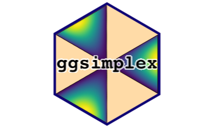
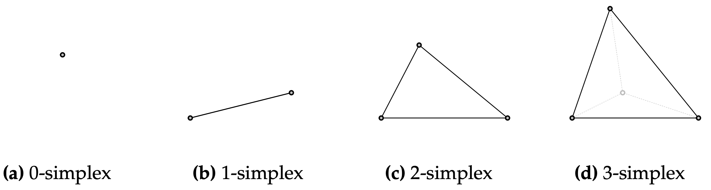
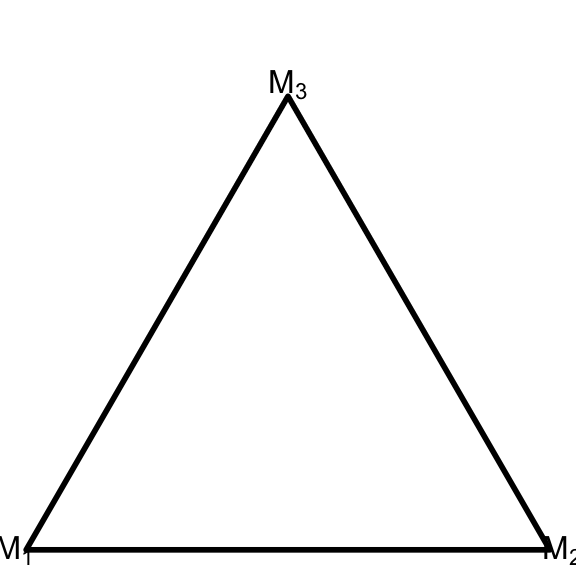
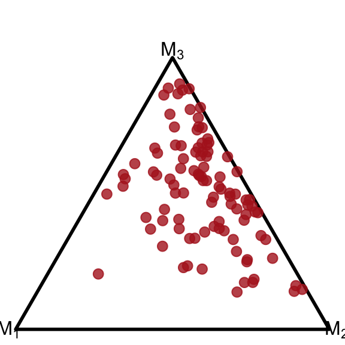
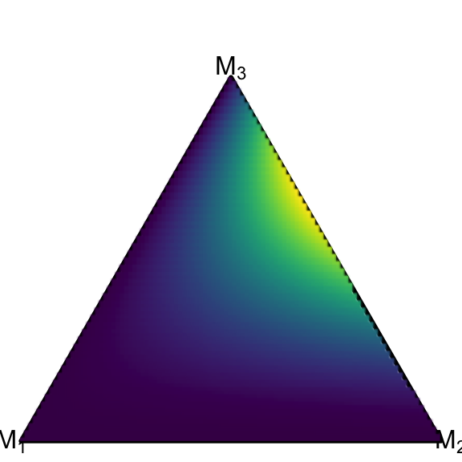
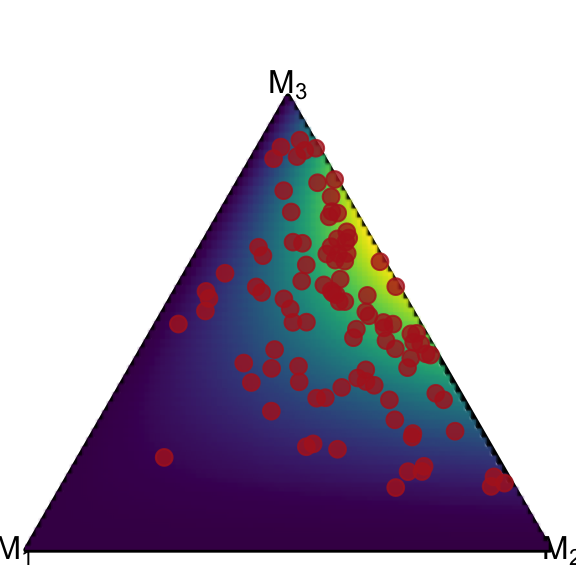
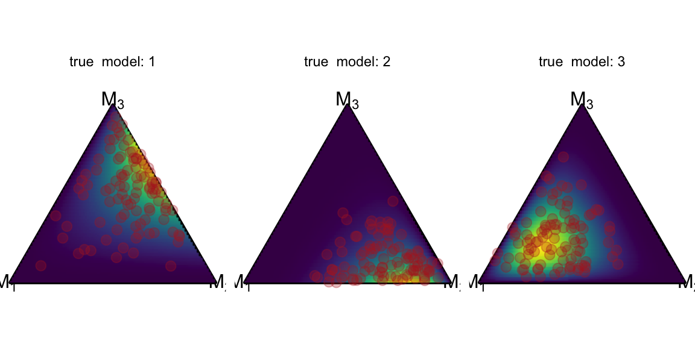
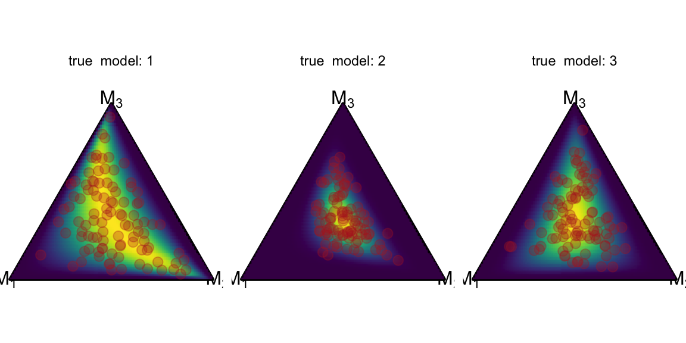

![]()
devtools::install_github('marvinschmitt/ggsimplex')
library(ggsimplex)
library(ggplot2)

Our latest manuscript Meta-Uncertainty in Bayesian Model Comparison has been accepted to AISTATS 2023! That’s a reason to celebrate 🎉 At the same time, this means that a lot of people hear about the project and some are interested in the code. So far, so good. Of course, we have released the software code for the paper in a public GitHub repository. But there is one problem. The fancy triangular density plots use an internal and highly experimental ggplot extension: {ggsimplex} (GitHub source)
We planned to release {ggsimplex} at some point next year, but now we feel like at least the experimental version should be made public for the AISTATS paper. This blog post gives a brief rundown of the package.
What is a simplex?
A simplex is the generalization of a triangle to \(n\) dimensions. In this blog post, we are exclusively interested in 2-simplices, that is: triangles.

The mathematical formulation for everything within a (\(J-1\)) simplex \(\Delta\) is pretty uncanny:
\[ \Delta = \left\{ x\in\mathbb{R}^J: x = \sum\limits_{j=1}^J\pi_j v_j \quad \text{with} \quad 0\leq \pi_j \leq 1, \sum\limits_{j=1}^J\pi_j=1 \right\}. \]
This sounds overly complex, but it basically just says “a vector of numbers that is non-negative, sums to one, and lies within the vertices”.
But why would we care about simplices? It turns out that some interesting data types actually live in simplices (plural of simplex). One example are compartmental data: By volume, the dry air in Earth’s atmosphere is about 78 percent nitrogen, 21 percent oxygen, and 1 percent argon (source). These percentages sum to one and can be visualized in a simplex. The main reason for me to develop the {ggsimplex}` page are so-called posterior model probabilities.
Say we compare \(J\) different candidate models \(M_1, \ldots, M_J\) in a Bayesian setting and we want to assess their fit to a data set \(y\). Then, we can use Bayes’ formula (through some intricate computational methods) to estimate the probability of each model given the observed data, namely the posterior model probability (PMP) for each model \(M_j\): \(p(M_j\,|\,y)\). By definition, the PMPs sum to one: \(\sum_{j=1}^J p(M_j\,|\, y)=1\). So PMPs on a fixed data set are data that live within a simplex 🤩 Enough preface, let’s jump in.
Installation
You can install {ggsimplex} from GitHub via the {devtools} package, and then load it along with {ggplot2}:
Canvas setup
In the experimental stage, the first step for every simplex plot is setting up the canvas by setting the aspect ratio, clearing the frame, and drawing the triangular border:
ggplot() +
coord_fixed(ratio=1, xlim=c(0, 1), ylim=c(0, 1))+
theme_void() +
geom_simplex_canvas()
Point plots
We sample some data from a distribution with support on the simplex, such as the Dirichlet distribution. This is conveniently implemented in {brms} through brms::rdirichlet. We need some more preprocessing and bind the simplex data into a single column pmp. The make_list_column function implements the list column conversion.
library(brms)
data = rdirichlet(n = 100, alpha = c(1,2,3))
data = as.data.frame(data)
colnames(data) = c("pmp_1", "pmp_2", "pmp_3")
data$pmp = with(data, make_list_column(pmp_1, pmp_2, pmp_3))Now we use geom_simplex_point and pass the data into the pmp asthetic (short for “posterior model probabilities”). The other arguments of geom_simplex_point are basically identical to the standard geom_point – we can use arguments like size, color, and alpha.
ggplot() +
coord_fixed(ratio=1, xlim=c(0, 1), ylim=c(0, 1))+
theme_void() +
geom_simplex_canvas() +
geom_simplex_point(data = data, aes(pmp = pmp),
size = 0.7, color = "firebrick", alpha = 0.8)
Density plots
Now we want to plot an analytic density which is defined on the simplex. Let’s take the Dirichlet density from the example above with \(\alpha=(1,2,3)\). We prepare the data in a data frame, which might seem overly complex at this point – but it will come in handy when we want to take advantage of advanced ggplot features such as faceting.
df_dirichlet = data.frame(true_model = 1)
df_dirichlet$Alpha = list(c(1, 2, 3))ggplot() +
coord_fixed(ratio=1, xlim=c(0, 1), ylim=c(0, 1))+
theme_void() +
geom_simplex_canvas() +
stat_simplex_density(data=df_dirichlet, fun = ddirichlet,
args = alist(Alpha=Alpha))
The modular structure of ggplot allows us to plot the scatter on top of the density plot:
ggplot() +
coord_fixed(ratio=1, xlim=c(0, 1), ylim=c(0, 1))+
theme_void() +
geom_simplex_canvas() +
stat_simplex_density(data=df_dirichlet, fun = ddirichlet,
args = alist(Alpha=Alpha)) +
geom_simplex_point(data = data, aes(pmp = pmp),
size = 0.7, color = "firebrick", alpha = 0.8)
Faceting
One core idea of the Meta-Uncertainty Framework lies in analyzing the model-implied posterior model probability distributions (= pushforward of the prior predictive) of different data generating models. So let’s look at simplex data from three differently parameterized Dirichlet distributions. We simulate the data into separate data frames, then bind them and create the list column pmp. Then, we save the parameters of the underlying Dirichlet distributions in the data frame df_dirichlet again so that we can generate density plots as above.1
1 The data preparation could be way more generic and elegant, but for the sake of clearness, this blog post sacrifices some elegance 😉
alpha_1 = c(1, 2, 3)
data_1 = data.frame(true_model = 1, rdirichlet(n = 100, alpha = alpha_1))
alpha_2 = c(2, 5, 1)
data_2 = data.frame(true_model = 2, rdirichlet(n = 100, alpha = alpha_2))
alpha_3 = c(4, 2, 2)
data_3 = data.frame(true_model = 3, rdirichlet(n = 100, alpha = alpha_3))
data = rbind(data_1, data_2, data_3)
colnames(data) = c("true_model", "pmp_1", "pmp_2", "pmp_3")
data$pmp = with(data, make_list_column(pmp_1, pmp_2, pmp_3))
df_dirichlet = data.frame(true_model = 1:3)
df_dirichlet$Alpha = list(alpha_1, alpha_2, alpha_3)Now that the column true_model identifies the different data generating processes, we can simply add the facet_grid and the ggplot magic happens:
ggplot() +
coord_fixed(ratio=1, xlim=c(0, 1), ylim=c(0, 1))+
theme_void() +
geom_simplex_canvas() +
stat_simplex_density(data=df_dirichlet, fun = ddirichlet,
args = alist(Alpha=Alpha)) +
geom_simplex_point(data = data, aes(pmp = pmp),
size = 0.7, color = "firebrick", alpha = 0.3) +
facet_grid(~true_model, labeller=label_both)
Other distributions
The stat_simplex_density function is designed to accept a density function and a list of parameters. So we can simply pass the density function of a logistic Normal distribution, as implemented in brms::dlogistic_normal. The logistic normal distribution is parameterized by \(\mu\) and \(\Sigma\), so we pass these parameters in a list column, grouped by the true model because we want a nice facet plot.
mu_1 = c(0, 0)
Sigma_1 = matrix(c(1, 0, 0, 1), nrow=2, byrow=TRUE)
data_1 = data.frame(true_model = 1,
rlogistic_normal(n = 100, mu = mu_1, Sigma = Sigma_1))
mu_2 = c(0, 0)
Sigma_2 = matrix(c(0.3, 0, 0, 0.3), nrow=2, byrow=TRUE)
data_2 = data.frame(true_model = 2,
rlogistic_normal(n = 100, mu = mu_2, Sigma = Sigma_2))
mu_3 = c(0, 0)
Sigma_3 = matrix(c(0.5, 0.3, 0.3, 1), nrow=2, byrow=TRUE)
data_3 = data.frame(true_model = 3,
rlogistic_normal(n = 100, mu = mu_3, Sigma = Sigma_3))
data = rbind(data_1, data_2, data_3)
colnames(data) = c("true_model", "pmp_1", "pmp_2", "pmp_3")
data$pmp = with(data, make_list_column(pmp_1, pmp_2, pmp_3))
df_logistic_normal = data.frame(true_model = 1:3)
df_logistic_normal$mu = list(mu_1, mu_2, mu_3)
df_logistic_normal$Sigma = list(Sigma_1, Sigma_2, Sigma_3)The actual plotting is straightforward again. We tell stat_simplex_density that we want a dlogistic_normal density function and pass the mu and Sigma columns of the df_logistic_normal data frame containing the parameters for each facet.
ggplot() +
coord_fixed(ratio=1, xlim=c(0, 1), ylim=c(0, 1))+
theme_void() +
geom_simplex_canvas() +
stat_simplex_density(data=df_logistic_normal, fun = dlogistic_normal,
args = alist(mu = mu, Sigma = Sigma)) +
geom_simplex_point(data = data, aes(pmp = pmp),
size = 0.7, color = "firebrick", alpha = 0.3) +
facet_grid(~true_model, labeller=label_both)
Issue Tracker
Please keep in mind that the {ggsimplex} package is in a very early stage. If it wasn’t for the AISTATS paper on Meta-Uncertainty in Bayesian Model Comparison, I would not have pre-released this immature package. That being said, bug reports and feature requests are always welcome at the GitHub Issues Page. All issue reports are appreciated and will be considered for the actual package release. Please do not expect them to be fixed anytime soon, though.
Outlook
The {ggsimplex} package is designed as a ggplot extension. This means that it follows the ggplot interfaces, which makes it compatible with other ggplot-based packages such as {gganimate}. More on that in another post when {ggsimplex} development has advanced further.
This blog post covered the elementary pre-beta functionality of the {ggsimplex} package. Expect large (and breaking) changes to happen in the future. Thank you for reading! If you enjoy content like this, follow me on Twitter (@MarvinSchmittML) or LinkedIn (Marvin Schmitt).
Cheers,
Marvin